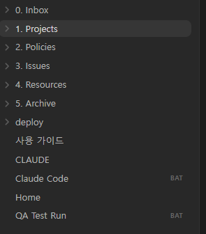
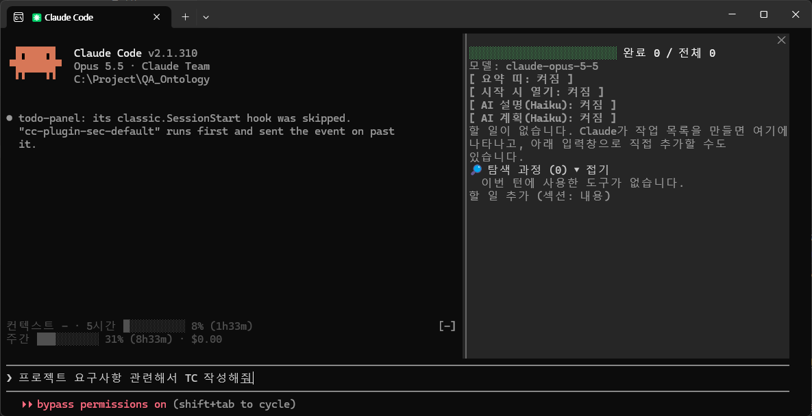
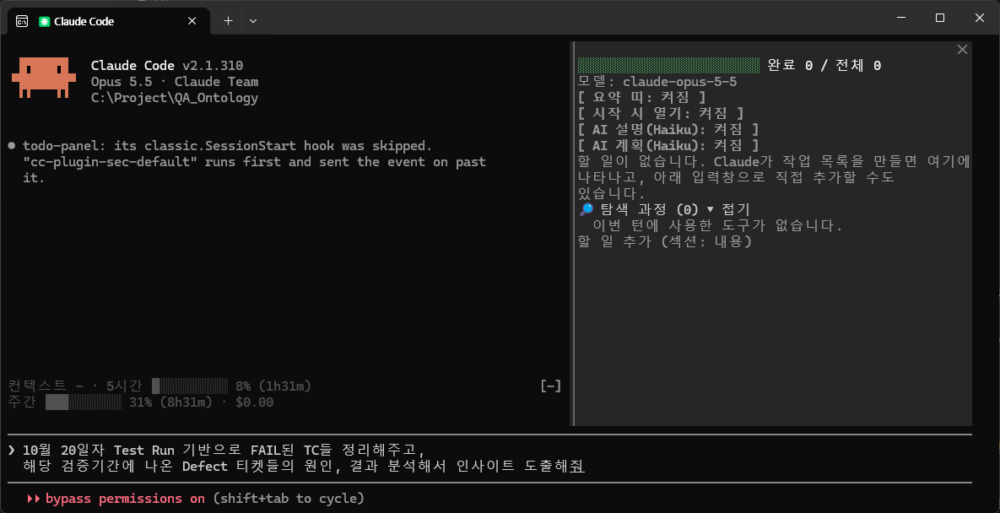

티켓 · TC · 기획서 · 결정으로 흩어져 있던 QA 지식을 서로 링크된 하나의 지식 저장소로 모으고, AI 에이전트가 매일 아침 무인으로 최신화하도록 만들었습니다. 지식이 자산이고, AI는 길잡이라는 원칙으로 3.5주 동안 혼자 기획 · 설계 · 구축했고 지금도 운영 중입니다.
버그는 ClickUp, TC는 시트, 기획은 Figma, 결정은 댓글. “이 기능 정책이 뭐였지?”에 답하려면 네 곳을 뒤져야 했고, 기획 변경은 조용히 지나갔습니다.
스크립트는 수집 · 비교, AI 에이전트는 판단 · 정리, 사람은 승인으로 역할을 나눠 지식 저장소와 평일 09:00 무인 동기화를 구축했습니다.
이슈 439 · TC 1,372 · 정책 18 · 인사이트 38이 한 곳에 연결되고, 기획 변경은 다음 날 아침 리포트로 영향 TC 수정안과 함께 도착합니다.
역할 · 단독 기획 · 설계 · 구축 · 운영 (3.5주, 이후 운영 중)
| 문제 | 실제 모습 |
|---|---|
| 지식이 흩어져 있다 | 버그는 ClickUp, TC는 스프레드시트, 기획은 Figma, 결정은 Slack · 티켓 댓글. 정책 하나를 확인하려면 네 곳을 뒤져야 했다 |
| 기획 변경을 놓친다 | Figma 문구 · 정책 카드가 조용히 바뀌어도 알 방법이 없어, TC 기대결과가 낡은 채로 남았다 |
| 결정이 댓글에 묻힌다 | 기획자가 댓글로 정한 동작(“실패 시 원복해야 한다”)이 정책 문서에 남지 않았다 |
| 회귀 범위의 근거가 약하다 | 과거 결함 패턴을 기억에 의존해 판단했다 |
| 반복 수작업이 많다 | run 생성, 결과 집계, Test Plan · Report 작성, 이슈 정리를 매번 손으로 했다 |

| 폴더 | 담는 것 |
|---|---|
0. Inbox | 메모 · 동기화 리포트 (거쳐 가는 곳) |
1. Projects | 진행 중인 기능(EPIC) — 개요 · 요구사항 · 테스트계획 · 결정로그 |
2. Policies | 확정된 동작 기준 (Figma · 기획 결정에서 추출) |
3. Issues | 버그 — 원인 · 대응 · 재발 방지 · 인사이트 |
4. Resources | 최종 자산 — 인사이트, 기능 사전, 도메인 목차, 이력 표, 커버리지 |
5. Archive | 종료된 프로젝트 |
인사이트 노트는 파일명이 곧 원칙 한 문장입니다. 예: “새 데이터 유형이 추가되면 기존 노드 전체에서 그 유형 분기를 확인한다”. 반드시 근거 이슈 · 프로젝트를 링크하고 근거 수를 셉니다. 근거가 많은 상위 10개는 누적 컨텍스트로 유지해 다음 기능의 테스트 관점으로 재사용합니다.
| 단계 | 하는 일 |
|---|---|
| 티켓 | 새 기능(EPIC) → 프로젝트 4종 문서 생성, 버그 → 이슈 노트, 디자인 이슈 → 이력 표. 비슷한 인사이트 자동 연결 |
| 댓글 | 티켓 · 하위 태스크 댓글 수집 → 이슈 노트에 덧붙임, 기획 답변을 결정로그에 반영 |
| TC · run | TC 1,372건 스냅샷, TC 공백(회귀 TC 없는 버그 등) 분석, 실행 결과를 마스터 TC에 반영 |
| Figma | 기획서 전 페이지 문구 · 코멘트 변경 감지 |
| 자동화 | E2E 자동화 프로젝트의 TC 연결 · 실행 결과 추적 |
| 종료 기능 | EPIC이 닫히면 인사이트 추출 → 누적 컨텍스트 갱신 → Archive 이동 |
| 리포트 | 변경 요약, 승인 대기 항목, 확인 필요 항목을 Inbox에 남김 |
기획서는 수시로 바뀌지만 변경 알림이 없습니다. 처음 쓴 MCP 도구는 호출 한도가 작고 컴포넌트 안 문구를 읽지 못했습니다.
❗ 불일치로 표시 → 개발 전에 기획자와 맞춘다기획자가 티켓 댓글로만 결정하면 정책 문서에 남지 않습니다. 그렇다고 기획자에게 Git · Obsidian을 쓰라고 하는 건 진입 장벽이 너무 큽니다.
동기화가 기획자 댓글에서 정책 결정으로 보이는 문장만 골라 리포트에 올립니다. 자동 등록은 하지 않습니다 — 오해로 잘못된 정책이 확정되는 것을 막기 위해서입니다.
리포트의 제안 아래에 형식 없이 자유롭게 답을 적으면, 다음 동기화가 지난 커밋과 비교해 사람이 바꾼 줄만 찾아 의도를 판단하고 처리합니다.
리포트에 인용된 외부 댓글은 비교 기준에 이미 포함되어 있어 지시로 읽히지 않습니다. 다른 사람의 커밋이 섞이면 외부 쓰기를 하지 않습니다.
외부 쓰기는 허용 범위(TC 생성 · 수정, 관계 연결)로만 제한하고, 변경 전 · 후 값을 남겨 언제든 되돌릴 수 있게 했습니다.


❓ 미확인으로 표시무인 실행 중 OAuth가 만료됐는데 종료 코드가 전달되지 않아 실패한 줄도 몰랐습니다.
→ 종료 코드 전달, 재시도, 실패 표식 + 다시 로그인되면 15분 안에 자동 재실행.
MCP 메타데이터 도구의 한계와 호출 한도 때문에 컴포넌트 안 문구를 못 읽었습니다.
→ REST API로 전체 텍스트 수집 + 스냅샷 비교로 전환.
“전처리”가 노드인지 학습 준비 단계인지 모호해 엉뚱한 범위를 측정했습니다.
→ 용어가 모호하면 측정 전에 범위를 확인하도록 절차 · 메모리에 반영.
문서 API가 태스크 멘션을 지원하지 않는다는 걸 직접 시험해 확인했습니다.
→ “번호+제목” 링크로 표준화, 화면에서 바꾼 서식이 덮어쓰기로 지워지지 않게 덧붙이기 우선.
Obsidian 표시 폭을 넘는 다이어그램이 잘려 보였습니다.
→ 렌더링해 폭을 측정하고 600px 이하로 재설계.
| 지표 | 수치 |
|---|---|
| 이슈 노트 | 439 (ClickUp 버그 387건 일괄 이관 + 매일 자동 추가) |
| TC | 1,372 동기화, 자동화 대상 760 중 391 자동화 추적 |
| 정책 노트 · 기능 사전 | 18 · 46 |
| 인사이트 (재사용 원칙) | 38 (근거 수 기준 상위 10개를 누적 컨텍스트로 유지) |
| 자동 동기화 | 21회 (평일 매일, 무인) |
| 구성 요소 | Python 스크립트 18, 에이전트 스킬 7 |